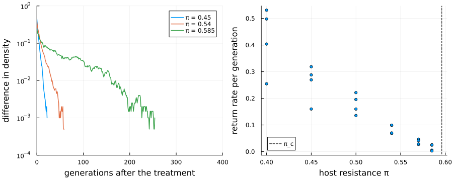
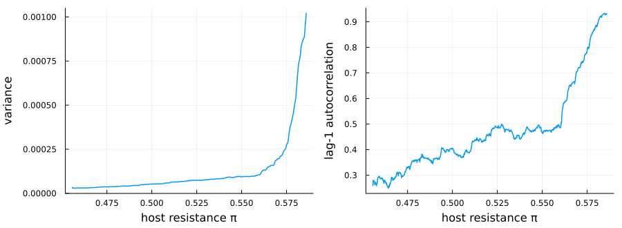

Resilience of a viral front near its threshold
Simon Frost
- Overview
- A front with an exact threshold
- Recovery after a treatment
- Establishment from one infected cell
- Early warnings along a slow ramp
- Caveats
Overview
How quickly does an infection recover from a treatment, how likely is it to establish from a single infected cell, and does it warn before it collapses? These are three simulation-based measures of resilience: the return rate after a pulse, basin stability, and early-warning indicators. This vignette measures all three on the viral front of Capitán et al. (2011) (vignette 3) with DynamicalResilience.jl.
DynamicalResilience drives a simulation through SciML’s integrator interface, whose methods CellularAutomataCore implements: init, step!, reinit!, set_u!. So its measures apply to any problem in the zoo, and neither the zoo nor the core depends on it.
ENV["GKSwstype"] = "100"
using EcologicalCellularAutomata
using CellularAutomataCore
using DynamicalResilience
using Plots
using Random
using StatisticsA front with an exact threshold
Without mutation (p = q = 0) every virion keeps the ability R, and the front is directed bond percolation: an infected cell infects each cell below it unless all the virions it sends fail. Above the host resistance π_c = 0.3552998^(1/R) the infection dies out (vignette 3). With R = 2, π_c ≈ 0.596. A known threshold lets us check what each measure says as it is approached.
const R = 2
πc = 0.3552998^(1 / R)
L = 2000
front(π; T=1200, seed=1, u0=fill(Int8(R), L)) =
CAProblem(build(:domany_kinzel_viral; R), (r=u0,), T, (; π, p=0.0, q=0.0);
space=Torus(L), seed)
round(πc; digits=4)0.5961Recovery after a treatment
At generation 200, when the front has settled, a treatment clears half of the infected cells (disturb! from CellularAutomataCore). recovery runs the front twice, with and without the treatment, and records the difference in the density of infected cells. The two runs share their random numbers, before the pulse because reinit! replays the run and after it because the core’s random numbers are keyed by seed, cell and generation. With p = q = 0 an extra infected cell can only make infection more likely, so the treated front stays below the untreated one and eventually meets it. The return rate is the slope of the logarithm of the difference.
treat(u, rng) = disturb!(copy(u), rng; fraction=0.5, from = >(0))
πs = [0.40, 0.45, 0.50, 0.54, 0.57, 0.585]
recoveries = Dict(π => [recovery(front(π; seed), Synchronous(); perturb=treat,
observe=viral_density, t_pulse=200, horizon=1000,
interval=1, rng=Xoshiro(seed), save_everystep=false)
for seed in 1:4]
for π in πs)
[(π=π, return_rate=round(median(r.return_rate for r in recoveries[π]); sigdigits=2),
return_time=median(r.return_time for r in recoveries[π])) for π in πs]6-element Vector{@NamedTuple{π::Float64, return_rate::Float64, return_time::Float64}}:
(π = 0.4, return_rate = 0.45, return_time = 12.0)
(π = 0.45, return_rate = 0.28, return_time = 18.0)
(π = 0.5, return_rate = 0.18, return_time = 27.5)
(π = 0.54, return_rate = 0.085, return_time = 48.5)
(π = 0.57, return_rate = 0.036, return_time = 120.0)
(π = 0.585, return_rate = 0.015, return_time = 223.0)fig1 = plot(; yscale=:log10, xlabel="generations after the treatment",
ylabel="difference in density", legend=:topright, xlims=(0, 400),
ylims=(1e-4, 1))
for (π, c) in ((0.45, 1), (0.54, 2), (0.585, 3))
r = recoveries[π][2]
keep = r.distance .> 0
plot!(fig1, r.t[keep], r.distance[keep]; label="π = $π", color=c, lw=1.5)
end
fig2 = scatter(repeat(πs; inner=4), [x.return_rate for π in πs for x in recoveries[π]];
xlabel="host resistance π", ylabel="return rate per generation",
label="", ms=3)
vline!(fig2, [πc]; ls=:dash, color=:black, label="π_c")
plot(fig1, fig2; layout=(1, 2), size=(900, 360), left_margin=4Plots.mm,
bottom_margin=5Plots.mm)
Far from the threshold the front recovers within about a dozen generations. Approaching it, recovery slows sharply: the median return time grows from 12 generations at π = 0.40 to a few hundred at π = 0.585, and the return rate falls towards zero. This is critical slowing down, the slowing of recovery near a critical point. The rates scatter more close to the threshold, where the slow decay is easily interrupted by the moment the two fronts meet.
Establishment from one infected cell
Basin stability asks how often a system ends in a given state from a random start. Here the start is a single infected cell placed at random, and the state is a front still infected after 2000 generations, with a ring of 1000 cells. Each trajectory has its own seed, through CellularAutomataCore’s EnsembleProblem:
one_cell(u, rng) = (v = zeros(Int8, length(u)); v[rand(rng, 1:length(u))] = Int8(R); v)
function establishment(π; n=300, L=1000, T=2000)
base = CAProblem(build(:domany_kinzel_viral; R), (r=zeros(Int8, L),), T,
(; π, p=0.0, q=0.0); space=Torus(L), seed=1)
ens = EnsembleProblem(base;
prob_func=(p, ctx) -> remake(p; seed=1000 + ctx.sim_id,
u0=one_cell(p.u0, Xoshiro(ctx.sim_id))),
output_func=(sol, ctx) -> (viral_density(sol.u[end]) > 0, false))
alive = solve(ens, Synchronous(), EnsembleThreads(); trajectories=n,
save_everystep=false).u
p = mean(alive)
return (π=π, established=round(p; digits=3), se=round(sqrt(p * (1 - p) / n); digits=3))
end
est = [establishment(π) for π in (0.50, 0.55, 0.58, 0.60, 0.62)]5-element Vector{@NamedTuple{π::Float64, established::Float64, se::Float64}}:
(π = 0.5, established = 0.85, se = 0.021)
(π = 0.55, established = 0.763, se = 0.025)
(π = 0.58, established = 0.59, se = 0.028)
(π = 0.6, established = 0.137, se = 0.02)
(π = 0.62, established = 0.0, se = 0.0)A single infected cell establishes with probability 0.85 at π = 0.50, and the probability falls steeply towards the threshold. Just above it a few fronts are still alive after 2000 generations: at the critical point a front dies out slowly, as a power of time, so the finite run overstates survival there. By π = 0.62 none survives.
DynamicalResilience’s basin_stability builds the same kind of ensemble. It sets each trajectory’s initial state and, since the problem has a seed, draws a new seed for each trajectory, so every trajectory has its own noise. With noise = :common the trajectories keep the problem’s seed instead and share one realisation of the noise:
start = CAProblem(build(:domany_kinzel_viral; R), (r=zeros(Int8, 1000),), 2000,
(; π=0.60, p=0.0, q=0.0); space=Torus(1000), seed=1)
bs(noise) = basin_stability(start, Synchronous(); sample_perturbation=one_cell,
returned=x -> x > 0, observe=viral_density, trajectories=300,
seed=1, noise, save_everystep=false)
independent, common = bs(:independent), bs(:common)
(independent=round(independent.fraction; digits=3), se=round(independent.se; digits=3),
ensemble=est[4].established, common=round(common.fraction; digits=3))(independent = 0.12, se = 0.019, ensemble = 0.137, common = 0.047)- Independent noise agrees with the ensemble above.
basin_stabilitygives 0.12 ± 0.02 atπ = 0.60, against 0.137 ± 0.02 from CellularAutomataCore’s ensemble: the same probability, from different seeds. - Shared noise does not. With
noise = :commonthe fraction is 0.047, a fraction for one realisation of the noise rather than the probability of establishment. Its binomial standard error does not describe its error.
Early warnings along a slow ramp
Before the infection collapses, does the front warn? The resistance is raised slowly from 0.40 to 0.62 over 3000 generations (ramped_series assigns integ.p, which the core’s integrator allows), and the density is recorded every 2 generations. early_warning removes the trend and computes the variance and the lag-1 autocorrelation in a moving window. Kendall’s τ measures whether they rise. The series stops 0.01 short of the threshold. For comparison, the same calculation is run at a fixed π = 0.45:
T = 3000
function indicators(seed; ramp=true)
r = ramp ? (p0, t) -> merge(p0, (; π=0.40 + 0.22 * t / T)) : nothing
s = ramped_series(front(ramp ? 0.40 : 0.45; T, seed), Synchronous(); saveat=0:2:T,
ramp=r, observe=viral_density, save_everystep=false)
πt = 0.40 .+ 0.22 .* s.t ./ T
keep = findall(<(πc - 0.01), πt)
return early_warning(s.x[keep]; t=s.t[keep], window=0.3, detrend=:gaussian,
bandwidth=0.1)
end
ews = Dict((seed, ramp) => indicators(seed; ramp) for seed in 1:4, ramp in (true, false))
[(seed=seed, ramp=ramp, τ_variance=round(ews[(seed, ramp)].tau_variance; digits=2),
τ_ac1=round(ews[(seed, ramp)].tau_ac1; digits=2)) for ramp in (true, false) for seed in 1:4]8-element Vector{@NamedTuple{seed::Int64, ramp::Bool, τ_variance::Float64, τ_ac1::Float64}}:
(seed = 1, ramp = 1, τ_variance = 0.98, τ_ac1 = 0.86)
(seed = 2, ramp = 1, τ_variance = 0.98, τ_ac1 = 0.79)
(seed = 3, ramp = 1, τ_variance = 0.98, τ_ac1 = 0.69)
(seed = 4, ramp = 1, τ_variance = 0.98, τ_ac1 = 0.92)
(seed = 1, ramp = 0, τ_variance = 0.14, τ_ac1 = -0.53)
(seed = 2, ramp = 0, τ_variance = -0.13, τ_ac1 = -0.12)
(seed = 3, ramp = 0, τ_variance = 0.63, τ_ac1 = -0.69)
(seed = 4, ramp = 0, τ_variance = 0.07, τ_ac1 = 0.32)e = ews[(1, true)]
πw = 0.40 .+ 0.22 .* e.t ./ T
plot(plot(πw, e.variance; xlabel="host resistance π", ylabel="variance", label="", lw=1.5),
plot(πw, e.ac1; xlabel="host resistance π", ylabel="lag-1 autocorrelation", label="",
lw=1.5); layout=(1, 2), size=(900, 330), left_margin=4Plots.mm,
bottom_margin=5Plots.mm)
Along the ramp the variance rises in every run, with τ close to 1, and the autocorrelation rises too, though less consistently. At a fixed resistance τ wanders on both sides of zero, so the signal is not an artefact of the calculation. In directed percolation the fluctuations of the density and the time they take to decay both grow near the threshold, which is what the two indicators measure.
Caveats
- The model is the special case
p = q = 0. It is directed bond percolation, chosen because its threshold is known exactly. With mutation the threshold moves and has no closed form. - Finite ring and finite runs. A ring of 1000 or 2000 cells and runs of a few thousand generations blur the threshold: survival just above it is overstated and the slowest recoveries are cut short.
- Shared noise is not a probability. With
noise = :common,basin_stabilitygives a fraction for one realisation of the noise, and its binomial standard error does not describe its error. The default, independent noise, estimates the probability of establishment. - A slow ramp is still a ramp. The early warnings are measured while the resistance changes, so the front never fully settles at any
π.
Capitán, José A., José A. Cuesta, Susanna C. Manrubia, and Jacobo Aguirre. 2011. “Severe Hindrance of Viral Infection Propagation in Spatially Extended Hosts.” PLoS ONE 6 (8): e23358. https://doi.org/10.1371/journal.pone.0023358.